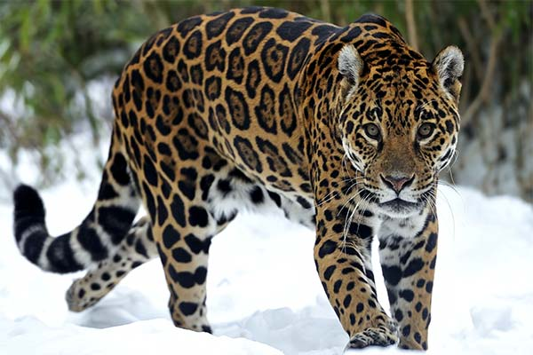

Ей поклонлись древние индейцы
Речь пойдет о ягуаре. Много веков назад в доколумбовых цивилизациях в Перу, Центральной Америке и Мексике этой кошке поклонялись как богу. Древние инкские художники около 1000 года до н.э. создали каменных идолов-богов в виде полулюдей-полуягуаров. В это же время на юге современной Мексики у индейцев появились изображения бога-ягуара. Самое странное, что эти две индийские цивилизации никогда не были связаны между собой. Такое совпадение удивляет ученых и является археологической загадкой.
Но на взгляд ученых-зоологов, здесь нет никакой тайны. Ягуар – самый крупный, самый могучий и вызывающий наибольший страх представитель семейства кошачьих в Западном полушарии. Так что не удивительно, что сразу две древние цивилизации из брали его своим божеством.
Ягуар – очень внушительный зверь. Латиноамериканцы даже называют его "эль-тигре" – тигр. Название "ягуар" произошло от древних индейских языков и означало "убийца, справляющийся с жертвой одним прыжком".
Самец ягуара в расцвете сил достигает длины более двух метров, а в весе от 110 до 180 килограммов. Ягуар отличается от своего сородича леопарда более крупными пятнами на шкуре, более массивной головой и могучими лапами. Подобно льву или тигру, ягуар способен издавать оглушительный рык, который наводит страх на всю округу. Это одна из отличительных черт ягуара. Именно из-за нее он был отнесен к крупным кошкам, мелкие ведь только мурлыкают и мяукают.
Ягуар охотится практически на любую дичь, начиная от мышей и заканчивая кайманами – южноамериканскими крокодилами. Но больше всего он любит пекари. Это американский родич кабана. Еще он обожает охотиться на капибара-самого крупного грызуна на земле, весящего целых 50 килограммов. Ягуар не отказывается и от легкой добычи. Он не прочь позавтракать черепахой, без труда выдрав ее из панциря, или же порыться в песке на морском пляже в поисках черепашьих лиц.
Ягуар великолепно плавает, прекрасно лазает по деревьям и преследует жертву с одинаковым успехом как в воде, так и на дереве. Он способен бежать очень быстро, но скоро устает. Так что английские автомобилестроители слегка ошиблись, назвав скоростную машину в его честь.
Ягуар иногда нападает на домашний скот, особенно свиней и телят. Хотя к человеку онотносится с осторожностью, но порой врывается в хижины и хватает собак, детей и стариков. Ученые расходятся во мнениях, становится ли ягуары людоедами, как иногда тигры, львы и леопарды. По-видимому, опыт поколений наyчил ягуара избегать людей, но безвыходном положении он без колебаний атакует охотника. Из кошек в Западном полушарии с ягуаром соперничает только пума, но ягуар сильнее и голова у него более массивная.
Когда-то ягуары обитали в США, на них велась интенсивная охота. Уже в сороковых годах нашего века их практически не осталось. Пока их еще можно встретить в Центральной Америке, но больше всего осталось в Бразилии. Беременность у ягуаров продолжается около 100 дней. Самка приносит двух четырех котят, которых кормит и оберегает около года. С матерью они держатся около двух лет, а после охотятся самостоятельно. В неволе ягуары живут до 20 лет.
